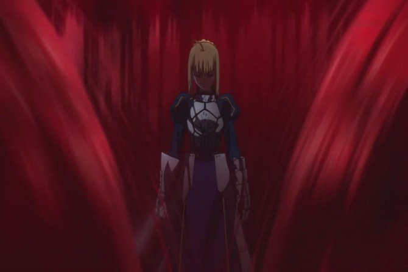
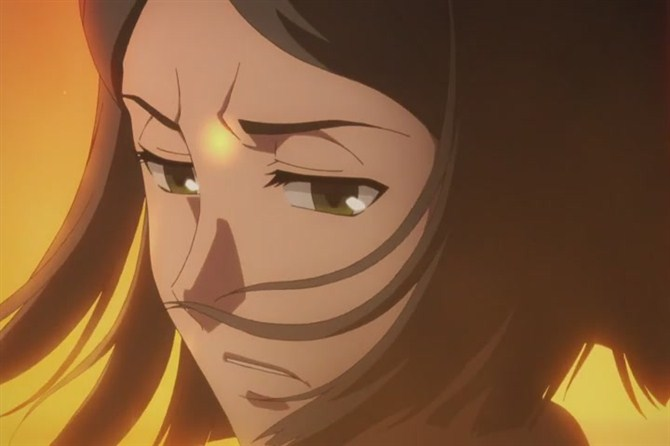

观FATE/ZERO不完全感慨
2012-07-18小说党早已经知道了结局，动画党差不多也多多少少被剧透了差不多了，因此看的时候说实话很多地方感觉有些被透的影响感情的投入，但是即使如此在了解大部分世界观和fate系列的前后历史的情况下也着实让人看着时而激动，时而心碎，作为《fate stay night》（fsn）的前一次圣杯战争，间桐脏砚早已预谋的这次第四次圣杯战争，交由虚渊玄来写出的剧本可以说是最为激烈最为悲怆的一次战争，就月世界的世界观而言，之中涉及到了fsn中没有涉及到的死徒以及魔术师举行圣杯战争的真正目的，虽然对于看过《空之境界》的童鞋而言早已了解何为根源，但是依旧有不少童鞋并不知道，而看过《月姬》的童鞋也对死徒有基本的了解，但是由于动画被贬为不是《月姬》，而且受众都不如fate系列，因此在这次的fz之中终于有所涉及，可以说是能够让更多人接触到月世界世界观的一个契机，再加上前段时间出的fate和月姬的杂烩作品《幻想嘉年华》，蓝绿冰作为一个月世界的粉丝看到这种状况还是很欣慰的
fz的故事情节十分不错，虽然总体介绍说是魔幻战斗类的作品，但是可以说只想喜欢热血战斗的同学真心不适合看这部作品，战斗的场面虽然气势磅礴而且效果华丽，但是平时为感情铺垫而给每个人物展示自己真心的戏份着实不少，不过正是因为总是穿插着人物之间关系的演绎和每个人物心理的描写才可以在最后让读者们更加能够体会到角色们的心境，也更能够体会到人心深处的情感，更容易打动观众，震撼人心，前半段姑且说是战斗打得豪爽，但是后半段的战斗都是各种虐心，有一个好的开始却没有一个让所有人感觉完美的结局，也正是这种让人忍不住落泪的每一次战斗的结局更好地刻画出了每个人物的性格，更能够让观众体会到人类的本质，人心的黑暗以及战争的残酷，这精心刻画的每一个细节与故事情节相缠绕，将人的梦想与野望，善良与丑恶，温柔与残忍，感动与悲哀都交织在那贯穿全篇的圣杯之上，在这之中有几对尤其让人感动并值得深思的组合，蓝绿冰就拿着几个组合来说说看

1.卫宫切嗣 & saber ：
作为一个主从组合，是master和servant相性最差的组合之一，两个人从刚见面开始就出现了交流问题，并不是说没有试着互相理解，但是注定互相不能理解，越是想去理解就越会远离对方，从这两个人身上能够看到命运开的玩笑，人心之间的隔阂，两个人明明都有着相同的抱负，却互相否定着对方，明明都有着相似的愿望，却互相憎恨着对方，明明都有着一样的决心，却互相鄙视着对方，卫宫切嗣以拯救全人类的目标为自己的抱负，为了拯救多数的人能够抹杀少数的人，saber以拯救自己的国民的目标为自己的愿望，以过于理想化的思想与正气凛然的作风战斗，两个人都有过站在正义的一方的想法，两个人都有着拯救人类的动机，却就是因为接受不了对方的做法而互相仇视，在卫宫切嗣看来，saber的想法过于理想化，只是说着漂亮的话摆架子，实际上对于拯救人民没有真正的帮助，是天真到了极点的一种想法，而在saber看来，卫宫切嗣的目的虽然值得她赞同，但是做法却过于残忍，通过杀戮来阻止杀戮，是saber无论如何都无法接受的做法，两个人越是互相试探着了解对方就越发地反感对方，如果不是其中有着爱丽斯菲尔前后调和，相信saber早已血刃切嗣了，然而，两个人又谈何容易，我们大家以上帝视角来观看作品，能够看到两个人内心最深处的感情，经历过的痛苦，但是他们两人却总是了解不到对方内心的最深处，从而产生隔阂
卫宫切嗣，从小因为作为魔术师的父亲的死徒的研究，亲眼目睹了一个村子的灭亡，友人玩伴甚至恋人就在其眼前变为了食尸鬼，为了不再发生这种惨剧，切嗣亲手杀了自己的父亲，之后，为了保证当初没有对恋人说的理想与抱负，为了保护和拯救更多的人类与养母兼老师的娜塔莉亚锻炼身手，成为了出色的魔术师猎人，但是在处理死徒奥德·波尔扎克的时候由于娜塔莉亚的疏忽使得飞机上出现危机，在娜塔莉亚在试图着陆的过程之中，卫宫切嗣为了不扩大伤亡，说了一句：“你是我真正的亲人”之后炸毁了那所飞机，之后的战斗虽然没有提到，估计也是如此，为了保护人类他可以对自己的父亲痛下杀手，为了保护人类他可以对自己的养育之人自己的恩师弃之不顾，他当然痛苦，他哭泣过，他无奈过，但是他有一个坚定的梦想，有一个要拯救全人类的梦想，建立一个不需要再流血的世界，他总是在世界的各种战场上辗转，总会看到社会黑暗的一面，因此他明白想拯救每一个人是不可能的，卫宫切嗣就是这样一个看透了世间的丑恶之后将人类的价值放在天平两端衡量的人，当自己身边的人一个个减少，不理解自己的人一个个离去，精神上千疮百孔的他仍然为了自己的这个愿望走到了最后，只是他不知道……圣杯对他开了一个很大的玩笑，世间所有的恶，让卫宫切嗣真正地崩溃，争斗是人类的本性，卫宫切嗣想要建立一个没有争斗没有流血的世界，这其实与毁灭人类并无他样，卫宫切嗣将梦想的解决方法寄托在圣杯之上，但是圣杯已经由于前一届圣杯战争被世间所有的恶所污染，通过一种很残酷的方式来告诉卫宫切嗣这个愿望的尽头到底有什么，卫宫切嗣在百般无奈之后，只能选择拒绝圣杯，却遭到了世间所有的恶的致死诅咒，后来也死在恶之诅咒之中，在了解到圣杯本质之后，卫宫切嗣用最后的两个令咒强制saber破坏圣杯，却没有想到会引起大型火灾，在火灾之中救下了土狼的时候仿佛自己得到了救赎，可以说，卫宫切嗣是十分悲伤的一个人物，他一直为了人类奋斗却并不被人理解，但是他一直坚信着自己的理想，最后却被妻子外壳的圣杯粉碎，这也能够体会到为什么fsn之中切嗣那么慈祥而saber对土狼所说的切嗣是一个卑鄙之人的理由了

saber，在fate的世界观中作为一个女性角色登场，传说中的故事相信大家也都已经有所了解，如果说fsn中saber最后幸福的话，那么fz里面的saber无疑是苦逼到了极点，刚被召唤出来就被master冷落和排斥，后来的作战中战术不合却只能强忍，三王宴会自己的理想和抱负被亚历山大帝全盘否认并且因当年的惨剧而略生动摇，本着骑士精神想与迪卢木多决一死战却暗中被切嗣利用残杀了肯尼斯一方，与切嗣的争论中又被侮辱了自己的骑士精神和被骂天真，决战时得知了堕为berserker之人的真身为自己的故友再次怀疑自己为国家所做过的事情，更是于圣杯只有一步之遥时被金闪闪百般阻扰调戏最后抱着切嗣的支援期盼却等来了切嗣的一句：“saber，用宝具破坏圣杯”……可以说全篇上下，saber除了在和夫人在一起的时候比较顺心以外，真心处处撞壁各种苦逼，本来是为了拯救自己的国家而参加了圣杯战争，但是结果却是被人嘲笑，藐视，愚弄，伤害，本来一心向正从未怀疑自己步伐的清正伟大之王，最后也被各种遭遇折磨的身心疲惫痛恨自己，所以才有了最后一话在战场的尸体山堆之上痛骂自己的那个留下悲痛与悔恨泪水的吾王，也有了fsn中以从新举行王选为目的而在此执着于圣杯的saber
可以说卫宫切嗣与saber的目的都是救人民于水火，但是却因为观念和方法很多因素变得互相仇视对方，卫宫切嗣最后要破坏圣杯却没有对saber说明理由是卫宫切嗣对saber的藐视与自己要拯救世界的抱负的原因，而saber却直至消失也不能理解为什么这个比谁都渴望圣杯的男人命令自己破坏圣杯，也不能容忍自己至今已来付出的努力最后却流失在了自己的手里，因此，直至最后两人之间的隔阂都没有消失，卫宫切嗣依旧没有打算去接受saber的想法和作为，而saber则是带着对卫宫切嗣的痛恨与无奈在这个世界上消失了，即使到了十年后的fsn，saber依旧对着土狼说卫宫切嗣是一个卑鄙小人
2.远坂时臣 & 间桐雁夜 ：
本届圣杯战争中御三家中的两位当家，两个人在整场战争中只见过一次面，但是却为大家演绎出了作为一个魔术师和一个普通人之间决定性的差距，虽然同样都是人类，但是想法却完全不同
远坂时臣，远坂家的家主，很正宗的魔术师，有着大部分魔术师都有着的愿望，到达根源之涡，而为此目的，对其而言最为快捷的方法就是获得圣杯，可以说时臣是这次圣杯战争准备最为周全，赢面最大的master，但是运气不好，从最开始收言峰绮礼为徒到最后冤死宅中发生的一切就没有一件事情发展的和时臣想的一样，可以说总是遇到意外，间桐雁夜，间桐家的临时家主，本来已经放弃魔术师道路的他为了救被远坂时臣送去间桐家被间桐脏砚强行改造肉体的远坂樱，抱着一死的决心接受了这次圣杯战争，不过今天不想说“都是时臣的错”这个话题，主要是说一下时臣与雁夜一战中两人见解不同所擦出的烈火
目前间桐家最后的良心间桐雁夜曾经以一个普通人的身份喜欢过一个女人，葵，而这个女人却嫁给了作为魔术同盟家族的远坂家主，也就是远坂时臣，雁夜并没有因此痛恨过谁，仍然暗中爱慕着那个已经嫁人的女人，而且也亲近这她的两个女儿，然而天命弄人，已经放弃魔术过着普通人生活的雁夜却因为得知了远坂时臣将自己的女儿远坂樱过继给了间桐家时深知这对小樱而言到底意味着什么，因此为了救下小樱自己回到家中与脏砚谈判，最后答应通过去的圣杯来解救小樱，但是为了填补一直没有过魔术修行的这个缺点强行植入脏砚的刻印虫，即使在圣杯战争中活下来也只剩下一年的生命，但是雁夜并不在乎，他只是一心要救下小樱，要对造成这一切惨状的时臣报复，直到caster被集体讨伐的那一夜终于，两个人面对面的交锋了一次
在一直钻研魔道的时臣眼中，放弃魔术只想过平凡生活的雁夜是不屑一顾并且十分无知的人，可以说是从心里的鄙视，而在忍受着刻印虫在体内的折磨走到今天的雁夜眼中，将小樱送入间桐家的时臣是十分可恨决不可饶恕的人，可以说已经真心痛恨着这个男人，在作为正宗魔术师的时臣眼中，将小樱送入间桐家，是为了小樱的幸福，这是可以让小樱也能够继承魔术知识走上魔术师道路的最佳方法，而在知道间桐家家主的残忍和无情的雁夜眼中，小樱过继来间桐家，无异于将这个小女孩的身心全部扼杀，会让樱的姐姐凛伤心，也会让她们的妈妈葵伤心，一个人眼中的无上荣耀在另一个人眼中是惨无人道的亲人相残，一个人眼中母女三人一起的天伦之乐在另一个人眼中是平庸凡俗，两个人确实都深爱着那母女三人，都用自己的方式为母女三人做最好的照顾，但是命运就是如此残酷，有着相同的愿望，却不得不互相仇视对方
最后时臣的惨死与言峰绮礼给雁夜设计好的圈套更是让雁夜收到了精神上最大的冲击和打击，面对着丈夫的尸体和站在那里措手不及的自己那个深爱着的女人就在面前痛骂着自己，而面对着一情势，雁夜无能为力，只能冤屈无言地承受着自己深爱的女人的指责和咆哮，终于雁夜忍不住了，当他听到葵骂出的最后一句话：“你根本就没有喜欢过任何人吧！！！”，走到今天承受的这么多痛苦究竟是为了什么，究竟还有什么意义，自己用性命换来的竟然是自己心爱的人的拷问，本想一直守护的女人被承受不住精神压力的雁夜掐至脑部缺氧，而雁夜自己也已经毫无生意，最后在berserker的发狂之下在美好的幻觉中死亡，可以说时臣和雁夜都是好男人，但是却因为命运的捉弄，终不能得到自己应得的回报，也是本作中让人无奈落泪的部分
3.韦伯 & rider ：
可以说这个组合是本届圣杯战争最为最为治愈的一个组合了，没有这对组合，第四届圣杯战争真的是一个残酷的地狱之争，韦伯通过亚历山大帝在这次圣杯战争中的成长史真的是少有的能够让人感到欣慰的地方了，韦伯是一个没有家庭背景没有实力没有信心的愤青，再自己的论文观点被老师拒绝之后抱着证明自己实力的想法参加了圣杯战争，他并没有意识到这是一场多么残酷多么可怕的战争，他只是想让其他人承认自己的想法，就这么无知的踏入了圣杯战争这趟浑水，好在召唤出的英灵伊斯坎达尔是个平时十分豪放对别人心理观察又很细微的一个人，这使得韦伯在这场残酷的竞争中得到了锻炼并且成为了第四届圣杯战争唯一的幸存者，rider，人人皆知的征服王亚历山大帝伊斯坎达尔，亲和力很强，也算是本届圣杯战争主要的调和者，其气度使得藐视一切的英雄王都说出称赞之言，可以说没有他很多战斗已经成为不择手段残酷杀戮的悲剧，面对实力不强还闹脾气的master各种开导，让韦伯得以成长使用宝具魔力不足却硬撑到底，只是不想为韦伯带来过大的负担，一路走来韦伯也颇有气概，被大帝开化不少，变得稍微成熟了些，最终之战与大帝一起驰骋在大漠战场之上也是令人感到欣慰的，只可惜对手是开挂的RMB玩家金闪闪，最终王之军势还是被破解，在大帝消失之后韦伯面对金闪闪的对话也让人领略到了这个本来天真的孩子所得到的成长，这才有了十多年后时钟塔出名讲师和大圣杯解体事件，可以说fz整体看下来是十分虐心的，只有看到这个小少年的时候，我们的心中才会觉得有一丝安慰

其实fz中有所联系且值得一说的组合何止这些，肯主任尖酸刻薄的命令对英灵藐视的态度与迪卢木多不求圣杯只求为主而战的愿望的矛盾，saber只为拯救国民不惜一切征求圣杯的执着与被saber救民之心逼至发狂深渊的berserker的疯狂的无奈，一直未曾见面却互相有着兴趣和恐惧的切嗣与绮礼等等十分多的可以深深去品味的情节设计，可以说fz是一个将人心中的美好愿望与丑陋思想都很好地表现出来的一部作品，在这里能够看到气势磅礴的战斗，更能看到难以捉摸的人间百态，称之为神作毫不夸张